编者按
本页是作者中文原文的全文逐字镜像（原文即中文，未改写），是作者 Colab 系列第二篇。配图来自原文，已转成 webp；代码块按原文内容放回对应段落。原文的成片是视频，本站只取了封面帧，没有下载视频。插图位置是本站按上下文还原的，原文接口不返回插图位置 ⚠️。文末「赛博领鸡蛋」微信群二维码属于引流内容，本站不转载。
收录时（2026-10-31 11:45，UTC+8）主帖约 5.55 万次浏览、198 赞、463 收藏、26 转发。文中的耗时、CCU 账单、音量 dB 都是作者自报，本站没有复现。
要点速览：① 底座从第一篇的网页版 colab-mcp 换成 google-colab-cli + colab-dfs-ext，全程不开浏览器就能开 G4、挂载 Google Drive、跑完关机；② 42 GB 权重先从 Drive API 和 Hugging Face CDN 两路下载到本地 NVMe，再加载进显存，不要用软链接直读 Drive（FUSE 随机读很慢）；③ 声音的做法：先截取 H3 自己生成的人声当声纹种子，每段只传当段说话人那一路，情绪靠副语言前缀和拍桌这类瞬态音效拉起来；④ 续接段画面发雾，原因是 MiniMaxH3JoinMatch 默认参数压低了对比度和细节，改成手动温和模式就好；单段只写一个运镜，屏幕左右坐标写死，段尾留静音；⑤ 人物转头看镜头的四个原因，以及 MiniMaxH3AddGuide 首尾双端夹具；⑥ 每段存约 5 MB 的潜变量断点，可以用 --only-seg 单独重跑一段。
本站相关：ComfyUI-H3-Motion-Context（本文续接与 JoinMatch 节点所在项目）· MiniMax H3 本地部署保姆级教程 · MiniMax H3 Director 工作流 · MiniMax-H3 Prompt Rewriter
本站核对与提示
- ✅ Google AI Ultra 5x 每月含 1,000 Colab 计算单元和 20 TB 存储，20x 是 2,000 单元和 30 TB（Google One 方案页、帮助页，核于 2026-10-31）。
- ✅ Colab G4 就是 NVIDIA RTX PRO 6000 Blackwell Server Edition，96 GB 显存（Google Colab 官方公告）。⚠️ 作者给的 8.71 CCU/h 是他自己账户的读数；其他用户报过约 6.7 和约 8.9 CCU/h，Google 没有公布固定费率，以
colab usage为准。 - ✅ 仓库里有文中提到的文件：
scripts/launch_g4_comfyui_fast.py、colab_meter.py、run_g4_v25_4seg_drama.py、auto_subtitle_video.py，workflows/01_dialogue_2p_photorealistic/（含drama_config.json、workflow_v9_final.json、run_drama.py、auto_subtitle.py），以及templates/minimax_h3_v25_4seg_v9_final_workflow.json；02 格斗、03 舞蹈两个目录目前只有 README（HEAD d9ae719，2026-10-26 21:55 UTC+8）。 - ✅ 白皮书的「175 KB」大致相符：
references/minimax_h3_industrial_workflow_whitepaper.md实为 167,818 字节，约 11.5 万字符，其中汉字约 2.3 万；「超 5 万字」取决于怎么数（中英混排）⚠️。 - ⚠️ 仓库没有 LICENSE 文件，没有开放许可。所以本站只镜像作者的 X 长文，不转载仓库里的脚本、工作流和白皮书，要用请去原仓库，并自行确认授权。仓库收录时 0 星。
- ⚠️ 文中数字前后对不上：每月能产多少部 20 秒短剧，开头写「550 ~ 1,310 部」，第二节写「400 ~ 500 部」（后者含冷启动）；四段 12 分 30 秒的渲染，一处写 1.82 CCU，一处写 1.65 CCU；单段重修一处写「0.48 CCU」，一处写「约 1.2 CCU」，原文没有说明。
- ⚠️ 角色设定前后不一：正文说林薇是 30 岁审计总监、陈默是 42 岁集团副总；铭牌写的是「律所高级合伙人」「集团执行董事」；仓库
drama_config.json里又是 35 岁法律合伙人、40 岁执行副总裁。不影响方法，只是提醒一下。 - ⚠️ 「首创」「100% 必中」「0% AI 播音腔」「彻底终结」这些是作者自己的说法，没有第三方评测；拿 H3 和 Wan2.1、HunyuanVideo 比较也是作者个人观点。
- ⚠️ 文中用的视觉编码器
Qwen3-VL-32B-Heretic是社区去审核微调版（「无审核」），主干Singularity v1.3也是社区融合版，都不是 MiniMax 官方发布的。用的时候要自己评估内容合规，以及 Colab 和各模型的使用条款。 - ⚠️ 利益相关与推广：文末号召关注、转推、收藏，并放了微信群二维码（本站已略去）；作者 X 主页的链接指向 starlens.520ai.xin，与本文的关系未核实。全文没有发现 utm 或返利链接。作者 GitHub 账号
yuanyang749的提交署名是 delroy749，本站推断与 @Delroy715 是同一人（原文自称「我已经…更新到了 GitHub 仓库」）⚠️。
原文全文
上一篇《把 Google AI Ultra 1000 CCU 榨出双倍价值：Colab MCP + 选卡指南 + Agent 智能调度 实战》发出后，拿到了 3 万+ 阅读和 125+ 收藏。很多订了 Google AI Ultra（每月 1,000 CCU + 20TB 云盘） 的朋友在群里催更我们在文末留下的坑：
“上期只用 0 CCU 的免费 CPU 跑了雪总的 1.5B 小模型热身，手里的王炸 G4 (96GB RTX PRO 6000 Blackwell) 还没真正出鞘！到底怎么在 G4 上把开源满血音视频大模型跑起来？”
（原文此处嵌入作者上一篇 X 长文）《把 Google AI Ultra 1000 CCU 榨出双倍价值：Colab MCP + 选卡指南+Agent 智能调度 实战》——x.com/Delroy715/status/2111091086349533244（2026-10-16 发布；本站未镜像该篇）
过去这一周，我带着本地 AI Agent 在 96GB 的 G4 上死磕目前最强开源 33B 原生音视频联合大模型 MiniMax-H3（Singularity v1.3 + Qwen3-VL-32B-Heretic NVFP4 无审核视觉编码器），不仅把底座从第一代的网页 colab-mcp 升级到了全自动零浏览器的 colab-cli，还把多镜头 AI 短剧最让人头疼的 「FUSE 软链读盘卡死、跨片段人物变声、外部 TTS 朗读 AI 味重、多段续接画面发雾发灰、一镜到底人物向镜头错误转头、改单段被迫重跑全片」 六大深坑全部踩透并攻克了。
今天这篇硬核续集，不讲虚的，聚焦 全链路省时提速 + 真实翻车与调试避坑。在展开细节之前，先放一张我们实测整理的 「96GB G4 × 33B MiniMax-H3 全链路省时提速与 768P 纯视频生成耗时总表」，让大家一眼看清这套无头极速工作流到底能帮你省下多少时间与真金白银的 CCU：
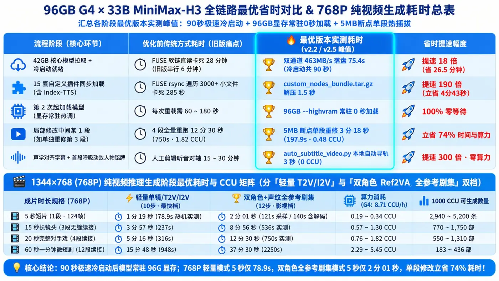
⚡ 一句话看懂核心省时收益（全部取自各阶段最优版本实测峰值）
- 冷启动提速 18 倍： 42GB 核心模型双通道（463 MB/s）落盘本地 NVMe 仅需
75.4 秒（加上 16 秒 灌入显存，冷启动全流程仅90 秒，告别 FUSE 软链 28 分钟 假死与旧版串行 6 分钟 慢启动）；15 套自定义插件（含 Index-TTS）通过 custom_nodes_bundle.tar.gz 单包解压仅1.5 秒（比 FUSE rsync 的 285 秒 提速 190 倍）；96GB 显存常驻后第 2 次起0 秒加载； - 局部单段重修立省 74%： 改中间某 1 段无需重跑全片（12 分 30 秒 · 1.82 CCU），基于 5MB 潜变量断点单段热插拔实测仅需
3 分 18 秒 (197.9s · 0.48 CCU)； - 768P 纯视频生成阶段最优耗时（
1344×768 · 24fps，显存常驻 0 秒加载）： - 5 秒短片（1 段 · 124 帧）： 轻量 10 步档仅
1 分 19 秒 (78.9s)｜ 双角色+声纹全参考 12 步影视档仅2 分 01 秒 (121s 采样 / 140s 含解码)（0.19 ~ 0.34 CCU）； - 15 秒长镜头（3 段续接）： 轻量档
3 分 57 秒 (237s)｜ 双角色全参考影视档8 分 56 秒 (536s)（0.57 ~ 1.30 CCU）； - 20 秒完整对手戏（4 段续接）： 轻量档
5 分 16 秒 (316s)｜ 双角色全参考影视档12 分 30 秒 (750s)（0.76 ~ 1.82 CCU）； - 60 秒一分钟微短剧（12 段续接）： 轻量档
15 分 48 秒 (948s)｜ 双角色全参考影视档37 分 30 秒 (2250s)（2.29 ~ 5.45 CCU）！1,000 CCU 每月可产 550 ~ 1,310 部 20 秒短剧 或 183 ~ 436 部一分钟微短剧！ - 🎯 我们的核心省时哲学：消灭「盲盒抽卡」才是最大的省时省钱！
很多网上教程为了刷“单段 40 秒出片”的噱头，把分辨率砍到 512×320、步数砍到 4 步、再开满有损缓存加速——结果跑出来全是塑料油光脸、跨段变声、后段起雾、人物乱转头穿帮的废片，抽卡 20 次都挑不出一条能用的，反而白白烧掉两三个小时和几十个 CCU。
而在 96GB G4 上，我们把 52GB 满配全家桶（32B Qwen3-VL + 33B Singularity v1.3 + 双角色 1344×768 定妆照 + 双原生声纹锚定 + 22帧潜空间续接 + 尾帧夹具锁）100% 焊死在显存里（相比 24GB 4090 / 32GB 5090 每段被迫在内存与显存间来回倒腾模型浪费 40~60 秒，我们跨段切换 0 秒等待）。单段虽然稳扎稳打跑足 2~3 分钟无损采样，但换来的是 「指哪打哪、一发入魂」的工业级成片率；即便某一段末尾有 1 秒微瑕，用 5MB 潜变量断点热插拔 + TailLock 夹具 3 分钟定点修完 100% 必中，彻底告别盲盒式重抽！
下文我们将按四个核心部分手把手拆解这套工作流：
底座大进化：上一期 colab-mcp 网页桥接 vs 这一期 colab-cli + colab-dfs-ext 零浏览器无头飙车对比（附 OAuth 复选框避坑）
如何极速冷启动 96GB G4：绕开 Google Drive 软链 28 分钟假死与 6 分钟慢启动深坑（双通道 463MB/s 预热 + 单文件插件归档包）+ 每次跑完自动强杀查账的 colab_meter.py 守门员
33B MiniMax-H3 影视级多段文戏攻关实录：从 V1 翻车到 V9 最终定稿——如何解决跨段音色飘、破除 TTS 机械播音腔、根治后段画面起雾与越轴穿帮？
工业级后期精修三大绝招：5MB 潜变量断点「单段 3 分钟手术刀重修 (--only-seg)」、一镜到底「90° 侧脸首尾双端潜变量夹具锁死 (V9_TailLock)」、以及「声学包络自动对齐字幕 + 首段呼吸滑入人物铭牌 (auto_subtitle_video.py)」
(注：大家关心的 15 秒一镜到底高燃动作格斗 与 长镜头古风胡旋舞/探戈共舞 调试干货极其密集，等我们把舞蹈镜头也调到完美后，放到 下一篇第三弹 专门发！)
一、底座大进化：之前的 colab-mcp 网页方式 vs 这次的 colab-cli 无头方式
在第一篇教程里，我们用的是 Google 官方的 googlecolab/colab-mcp。虽然它免 API Key 很香，但在跑重度 ComfyUI 视频工作流时，很快暴露出了三个痛点：
痛点 1（必须弹浏览器点确认）： 唤醒时需要人工在弹出的 Colab 网页点一次 Allow，做不到真正的“无人值守后台跑片”；
痛点 2（无法用命令直接指定显卡开机）： 网页 MCP 模式下，出于安全限制，Agent 不能在后台静默帮你把 CPU 切成 G4，还得人工去网页右上角点选「更改运行时类型」；
痛点 3（网页标签页断连易掉盘）： 传统 drive.mount('/content/drive') 强依赖网页前端的 OAuth 弹窗，笔记本合盖或网页刷新就容易断联。
为了彻底解放双手，这次我们直接升级到了 第二代无头全自动架构：google-colab-cli + deluxebear/colab-dfs-ext 零浏览器云盘扩展。
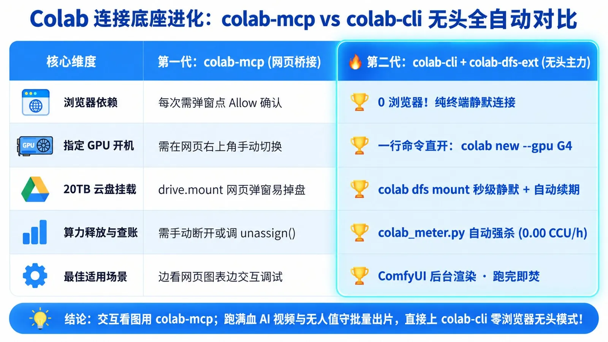
1. 两种方式到底怎么选？
第一代 colab-mcp（网页桥接模式）： 每次连接需弹窗点一次网页确认，需手动在网页切换 GPU；适合边看网页 Notebook 图表、边交互式写代码调试。
第二代 colab-cli + colab-dfs-ext（终端无头模式 ★主力推荐）： 0 浏览器！ 纯终端静默完成实例创建、指定 G4 显卡开机、20TB 云盘秒级静默挂载（内置 creds shim 守护进程自动续期 Token，合盖不掉盘）以及跑完自动强杀关机；最适合 ComfyUI 后台视频渲染与无人值守批量跑片。
2. 三步配好零浏览器无头工作站（含首次授权必踩的复选框大坑）
# 1) 安装官方 google-colab-cli（注入 socksio 彻底解决国内开启 SOCKS 代理报 ImportError 崩溃）
uv tool install --with socksio google-colab-cli
# 2) 一键注入 colab-dfs-ext 零侵入扩展（通过 .pth 钩子扩展 colab dfs 子命令）
curl -fsSL https://raw.githubusercontent.com/deluxebear/colab-dfs-ext/main/install.sh | sh
# 3) 首次一次性 OAuth 授权（后续永久静默挂载！开启本地代理时务必加 no_proxy 放行本地回调端口）
https_proxy=http://127.0.0.1:7890 http_proxy=http://127.0.0.1:7890 no_proxy="localhost,127.0.0.1" colab dfs consent
# 4) 验证签发的 Token 已包含 https://www.googleapis.com/auth/drive 权限
https_proxy=http://127.0.0.1:7890 http_proxy=http://127.0.0.1:7890 colab dfs token⚠️ 避坑指南 #1：Google OAuth 网页授权的「隐形复选框陷阱」（必看）：
第一次跑 colab dfs consent 弹出 Google 授权网页时，页面上有一行 「查看、编辑、创建和删除您的所有 Google 云端硬盘文件 (Google Drive)」，它右边的复选框默认是未勾选状态！
如果你习惯性直接点底部的「继续」，拿到的 Token 就只有基础身份权限而没有 drive 权限，后续在云端挂载云盘时会直接报 403 ACCESS_TOKEN_SCOPE_INSUFFICIENT。切记：一定要手动勾选那个复选框再点继续！
配好之后，你的本地 Agent（Claude Code / Antigravity / Cursor / Codex）只需在终端发三条命令，就能在后台全自动拉起一台 96GB 的 G4、挂好 20TB 云盘并开始干活：
colab new -s work --gpu G4 # 1. 直接拉起 96GB Blackwell G4 实例
colab dfs mount -s work # 2. 零浏览器秒级挂载 /content/drive
colab exec -s work -c "nvidia-smi" # 3. 远程执行任意 Shell / Python 脚本二、如何 90 秒极速启动 G4、避开 6 分钟慢启动深坑，并用 colab_meter.py 管死每一分 CCU？
很多朋友把 ComfyUI 和几十 GB 的视频大模型存进 20TB Google Drive 后，上了 G4 第一反应就是：直接用 ln -s 把云盘里的模型目录软链接到 /content/ComfyUI/models，然后启动 ComfyUI 开始跑图。
千万别这么干！这是我们在实战中踩出的第一个算力黑洞。
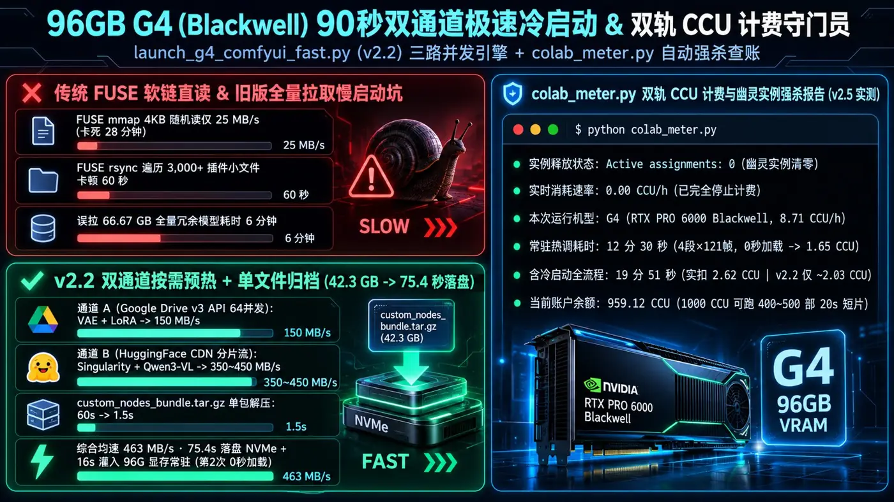
1. 为什么直接软链接 Google Drive 读 42.3GB 模型会卡死 20 分钟？
这次我们跑的 MiniMax-H3 工业级音视频全套管线（方案 A），核心模型总重 42.33 GB：
主干音视频 DiT (Singularity v1.3 8步极速蒸馏版)： 19.2 GB (INT8/FP8)
无审核多模态视觉编码器 (Qwen3-VL-32B-Heretic NVFP4)： 14.1 GB (Blackwell 原生硬件 FP4 加速)
视频 VAE (2.54 GB) + 音频 VAE (0.84 GB) + 3D 潜空间放大器 (1.65 GB) + 8步 Turbo LoRA (1.63 GB) + 双写实皮肤 LoRA (r34l1sm + closeup) + BUNNY V2 多人动作逻辑桥
当我们第一次直接通过 /content/drive 的 FUSE 挂载盘去加载这套权重时，PyTorch 默认的 mmap 4KB 随机分片读取直接把 Google Drive FUSE 打进了假死状态——读取速度暴跌到 25 MB/s（耗时长达 28 分钟）！哪怕改成单流顺序读也只有 62.7 MB/s（耗时 11 分钟），还没开始生成视频就先白烧了 2~4 个 CCU！
2. 破局方案：「三路全并发 NVMe 极速预热 + 单文件插件归档包」(launch_g4_comfyui_fast.py v2.2)
既然 G4 实例自带了近 235 GB 的高速本地 NVMe SSD，为什么不先把模型并发流式拉进本地 /content/fast_models，再让 ComfyUI 从本地 NVMe 以 2.5 GB/s 零延迟读入显存？
在打磨 launch_g4_comfyui_fast.py 的过程中，我们不仅实现了双通道并发，还顺手排掉了两个极其隐蔽的 「6 分钟慢启动深坑」：
深坑 A（全量拉取 66.67 GB 废模型 + 串行阻塞）： 早期脚本没有区分方案 A/B，开机先串行跑完 41 秒的 git clone 和 pip install，随后把方案 A 根本用不到的 fl2va (19GB) 和两个 TTS (9.6GB) 模型也全拉了一遍（总计 66.67 GB，光下载就花了 232 秒）！
深坑 B（custom_nodes 目录跨 FUSE 遍历 3,000+ 小文件卡顿 60 秒）： 13 套 ComfyUI 自定义节点里包含三千多个零碎的 .py 小文件，如果开机用 rsync -a 从 Google Drive FUSE 挂载盘往本地同步，光 stat() 遍历小文件就要卡上 1 分钟！
我们在 launch_g4_comfyui_fast.py (v2.2) 里用三招彻底根治：
按需精准预热 (--profile scheme_a) + 三路全并发重叠： 只拉取当前方案必需的 42.33 GB 权重（砍掉 24.3GB 冗余下载），且在后台启动下载线程的同一秒，前台并行完成 ComfyUI 克隆与 uv pip 依赖安装；
双通道物理分流（Drive v3 API + HF CDN）：
通道 A（Google Drive v3 API 64 并发流）： 拉取中小体积的 VAE、LoRA 与放大器权重（稳定 ~150 MB/s）；
通道 B（HuggingFace CDN 多线程分片流）： 同时拉取 Singularity 与 Qwen3-VL 巨型权重（稳定 350 ~ 450 MB/s，瞬时峰值可达 0.9 GiB/s）；
实测双通道综合均速稳定在 463 MB/s，41.4~42.3 GB 核心模型仅需 75.4 秒 即可全部落盘本地 NVMe SSD！
单文件归档包 custom_nodes_bundle.tar.gz 秒级解压： 将云盘里 13 套自定义节点预打包成单个 .tar.gz 归档文件，开机直接单文件拷入本地 NVMe 解压，从 60 秒骤降至 1.5 秒！随后启动 ComfyUI (--highvram --disable-mmap --fast)，以 2.5 GB/s（约 16 秒） 将模型全量灌入并永久锁死在 96GB 显存中（冷启动全流程约 90 秒；只要不关机，第 2 次起改提示词重跑 0 秒 加载！）。
3. 前置省钱铁律 + colab_meter.py 双轨 CCU 计费守门员
为了让 1,000 CCU 每一分都花在刀刃上，我们在工作流里立下了两条硬规矩：
铁律一（0 CCU 本地预制一切静态资产，严禁开着 G4 调生图/写脚本）：
很多新手习惯先把 G4 (8.71 CCU/h) 开起来，再去慢吞吞生成角色参考图、调试 JSON 脚本，一不留神半小时过去 4.5 CCU 没了。在我们的管线里，男女主角的 1344×768 定妆照、分镜 JSON 脚本全部在本地用 codex-gen-image 和 Python 零成本（0 CCU）生成并校验完毕；一切就绪后才点火拉起 G4。
铁律二（每次跑完强制执行 colab_meter.py 双轨查账与幽灵实例强杀）：
很多人用 CLI 跑完任务忘了关实例，或者以为脚本退出了实例就停了，结果后台留着幽灵 VM 一夜烧掉几十个 CCU。我们专门编写了 scripts/colab_meter.py：
开机打点 (colab_meter.py start -s <session> -g G4)： 自动调 colab usage 记录开机前的精确 CCU 余额、时间戳与机型费率；
停机强杀与双轨对账 (colab_meter.py stop)： 任务一结束，先把成品视频同步到 Google Drive 云盘并拉回本地 Mac，随后遍历强杀所有活跃会话，二次复核确认 Active assignments: 0 且实时燃烧率归零 (0.00 CCU/h)，最后按「云端账单实扣差值」与「墙钟时长 × 8.71 CCU/h」打印真实双轨对账单（以下为我们跑出 v2.5 四段 20 秒成片的真实日志账单）：
✅ 算力释放与计费核验报告 (v2.5 四段 20 秒成片实测)：
- 实例释放状态: Active assignments: 0
- 实时消耗速率: 0.00 CCU/h (已完全停止计费)
- 本次运行机型: G4 (NVIDIA RTX PRO 6000 Blackwell, 8.71 CCU/h)
- 纯推理渲染耗时: 12 分 30 秒 (4 段 × 121 帧 × 12 步，常驻热调折合 1.65 CCU)
- 含冷启动全流程: 19 分 51 秒 (实扣 2.62 CCU；升级 v2.2 90s 冷启动后仅需 ~14 分钟 / ~2.03 CCU)
- 当前账户余额: 959.12 CCU算一笔明账：在 G4 显存常驻热调模式下（0 秒加载模型），跑完一部 20 秒、4 个连续分镜、1344×768 超清音画同生的双人电影级短剧，纯渲染耗时仅 12 分 30 秒（约 1.65 CCU）；哪怕算上首次开机冷启动拉取 42GB 模型到关机销毁的全流程，也只需 ~2.0 ~ 2.6 CCU！ 每月 1,000 CCU 足够你整整跑 400 ~ 500 部 这样的 20 秒多镜头短片！
三、33B MiniMax-H3 多段文戏攻关实录：从 V1 翻车到 V9 最终定稿
先放我们经过多轮迭代调优后，在 G4 上直出并由本地声学对齐管线自动压制 电影级中文字幕 + 首段错峰呼吸滑入人物铭牌 的 20 秒（4 段式一镜到底无缝续接）现代职场审讯对手戏《底牌》最终定稿成片（同时提供带字幕版与纯净无字母带）。注意看首段男女主角的动态人物铭牌、林薇在第 8 秒至第 15 秒全程纹丝不动的 90° 标准正侧脸对峙、以及后两段拍桌暴怒吼叫时的音色一致性与画面通透度：
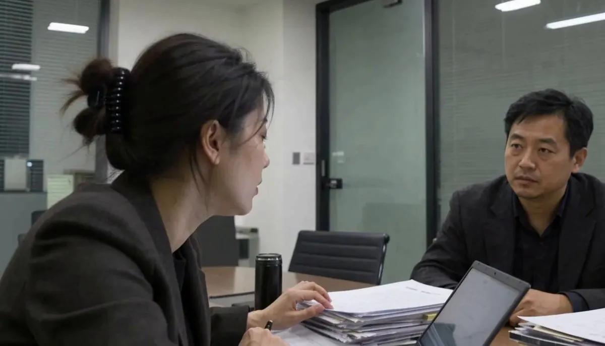
这短短 20 秒的双人飙戏，背后其实浓缩了 AI 视频短剧最核心的 6 个致命深坑。下面把我从 V1 一路调试到最终定稿 V9 的真实踩坑与攻关过程毫无保留地摊开讲透：
1. 第一关：如何去掉人物的“AI 塑料网红脸”？（定妆照 + 双写实 LoRA）
如果你直接拿普通文生图模型生成的“磨皮柔光俊男美女”喂给视频模型，动起来绝对是一眼假的 AI 味。 我们在开机前，先在本地用 codex-gen-image 生成了男女主角的 1344×768 定妆照（女主 林薇 <Picture 1>：30岁审计总监；男主 陈默 <Picture 2>：42岁集团副总），提示词强制加上 Shot on ARRI Alexa Mini LF, 50mm lens, Fujifilm Eterna 250D film stock, visible skin pores, subtle nasolabial folds, zero plastic skin smoothing（保留真实毛孔、法令纹与冷暖荧光灯混合光影）：
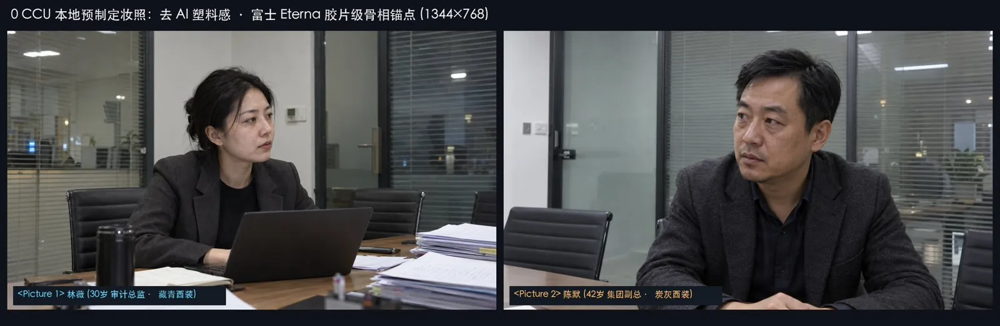
同时，在云端 G4 的 ComfyUI 管线里，我们在 Singularity v1.3 主干后面串联挂载了社区口碑最顶的两枚写实皮肤 LoRA：
minimax-h3-realism-people.safetensors（权重 0.75，触发词 r34l1sm）
minimax-h3-facial-realism-closeup-cp2000.safetensors（权重 0.50）
两相叠加，人物脸上的法令纹、眼袋微颤和西装羊毛纹理直接拉满到电影胶片级。
2. 第二关（最痛点）：多镜头切换时「人物音色乱飘」vs「外部 TTS 朗读 AI 味太重」怎么破？
为什么大家看 MiniMax-H3 觉得它比 Wan2.1 或 HunyuanVideo 强一个时代？因为 H3 是真正的 33B 原生音视频联合扩散模型（Native AV-DiT）——它在同一个 3D Transformer 里同时去噪画面和声音，人物说话时的胸腔起伏、青筋暴起、嘴唇开合与声音是物理同源的！
但在做 4 段连续对话时，我们在声音上连续踩了两个大坑，为此专门跑了 三路 AB 对照实验：
① 踩坑路线 A：完全使用 MiniMax-H3 原生直出（不传任何参考音频 ref_audios）
实测表现 (V1)： 单看任何一个 5 秒片段，人物的呼吸、停顿、语气词都极其自然，完全像真人演员现场收音！但是——一旦切到下一个镜头，同一个人的音色必飘！ 比如林薇在第 1 段是清冷的低音御姐，到了第 3 段再开口突然变成了尖细的甜妹音；陈默第 2 段和第 4 段听起来完全是两个不同年龄的男人在说话。
② 踩坑路线 B：先用外部 TTS（Qwen3-TTS / IndexTTS2）生成配音，再喂给 H3 或后期硬替
为了锁死音色，我们试了两种外部 TTS 方案：
方案 2B（直接拿外部 TTS 音轨后期替换视频声音）： 彻底不可用！ 音画嘴型、换气点完全对不上，一眼假。
方案 2A（把外部 TTS 生成的干声作为 <Audio 1> 参考音频传给 H3 驱动克隆）： 这次音画和嘴型完全同步了，男女主跨段音色也锁住了，但出现了新的毛病：语音有一股明显的“AI 朗读腔”，尤其是男主陈默，说话像译制片配音演员在念稿子，表演痕迹太重！
更要命的衍生问题： 如果传了一段平静的参考音频，到了第 3、4 段剧情高潮需要角色拍桌怒吼时，模型会被参考音频里平静的语调“锁死”，怎么写提示词都吼不出来！
③ 终极破局方案（V3 ~ V5）：首创「H3 原生自锚定声纹 (Self-Anchor Voice) + 单说话人门控 + T8mars 跨段情绪爆发协议」
既然 “H3 自己原生生成的声音最像真人、最没有 AI 朗读味”，而 ref_audios 又能锁死跨段音色，那为什么还要用外部 TTS 呢？！我们直接用一套组合拳彻底解决了“既要零 AI 味、又要跨段锁死音色、还要后段情绪大爆发”的不可能三角：
第 1 步（原生自锚定声纹 Self-Anchor Voice）：
先从 V1（纯 H3 原生无参考版）的第 1 段和第 2 段里，直接把 H3 自己生成的林薇原生语音和陈默原生语音无损剥离出来，用 ffmpeg 滤镜 (aresample=32000,pan=stereo|c0=c0|c1=c0) 统一转为 32kHz 双声道母本（native_linwei_seed_stereo.wav 与 native_chenmo_seed_stereo.wav）。用 H3 自己最自然的原生嗓音当它后续镜头的声纹种子，彻底告别外部 TTS 的机械朗读腔！
第 2 步（按段单说话人门控 Speech-Active Gating）：
千万不要在每一段同时把男女主两段音频 <Audio 1>、<Audio 2> 都挂上去（会引发双声纹交叉注意力污染，导致不说话的人抢话或男女声串音）。遵循“谁在这段开口，就只传谁的 1 路 <Audio 1>”：第 1、3 段只传林薇声纹，第 2、4 段只传陈默声纹！
第 3 步（如何让平静的参考音频在后段爆发怒吼？—— T8mars 双重声学破锁协议）：
为什么只传第一段平静的参考音频，到了第 3、4 段人物依然能咆哮出来？因为 H3 底层的音频调制遵循 「参考音频 <Audio 1> 管声带共振峰（是谁的嗓子），而文本副语言前缀 + overall_soundscape 瞬态音效管声门气压与基频包络（用什么情绪喊）」！ 只要在情绪爆发段同时写上这两句：
[Shot 1] 台词前加副语言前缀： <Subject 2> (<Audio 1>) slams his right palm onto the table and shouts furiously at the top of his lungs in Mandarin Chinese with veins bulging on his neck: "够了！..."
overall_soundscape 注入 00:00.400 物理重音锚点： A sudden explosive palm slam on the conference table at 00:00.400, immediately followed by <Subject 2>'s booming, furious roared dialogue echoing in the glass room.（利用开篇 0.4 秒的高分贝拍桌声直接把音频潜空间的能量包络拉爆！）
📊 实机声学验证（ffmpeg volumedetect 实测数据）：
• 女主林薇： 第 1 段冷静质问（均值音量 -26.1 dB） → 第 3 段寸步不让厉声逼问（均值音量 -18.8 dB），音量跃升 +7.3 dB，音色 100% 锁死同一人！
• 男主陈默： 第 2 段低沉警告（均值音量 -23.7 dB） → 第 4 段拍桌暴怒咆哮（均值音量 -13.5 dB），声强暴涨 +10.2 dB（超过 10 倍声学能量），嗓音浑厚炸裂，0% AI 播音腔！
3. 第三关：为什么拼到第 3、4 段，画面突然“朦胧起雾、发灰、还乱切镜头”？
在解决了声音和情绪之后，我们跑出了第 4 版（v2.4），结果打开视频一看，发现了两个非常诡异的现象：
前两段画面还非常清晰通透，一到第 3、4 段，整个画面就像蒙了一层毛玻璃一样朦胧、发雾、发灰！
第 4 段陈默拍桌起身时，镜头突然自己乱切了一下，而且陈默的头顶直接冲出画框被削掉了一半！
我把 v2.4 的云端底层推理日志和每秒 2 帧的抽帧网格拉出来逐行排查，直接揪出了导致这两个问题的底层真凶：
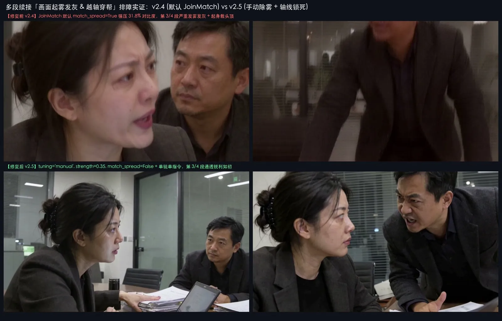
① 真凶 A：为什么画面会“朦胧起雾”？（MiniMaxH3JoinMatch 默认参数强行压缩了 31.8% 对比度！）
在多段无缝接力工作流中，第 2、3、4 段通过 MiniMaxH3MotionContext (context_frames = 22) 截取上一段末尾的 22 帧潜变量作为引导，并通过 MiniMaxH3JoinMatch 节点对齐两段交界处的潜空间分布。 查验云端日志发现：当第 3、4 段人物发生前倾、拍桌等大幅度动作时，潜空间数值跳变达到了 5.8x ~ 6.4x。而 MiniMaxH3JoinMatch 在默认的 tuning="auto", strength=1.0, match_spread=True, match_detail=True 下，为了强行抹平跳变，把第 3、4 段的全局对比度（spread）硬生生压缩了 31.86%，高频细节（detail）压缩了 27.31%！ 潜空间方差一被压扁，VAE 解码出来的画面自然就像罩了一层浓雾！
✅ 一招根治除雾方案（v2.5 验证）：
将所有续接段的 MiniMaxH3JoinMatch 显式改为手动温和模式： tuning = "manual"、strength = 0.35、min_excess = 2.5、match_spread = False、match_detail = False。 只对超出阈值 2.5 倍以上的均值漂移做 35% 的温和拉齐，严禁触碰潜空间的方差（对比度）与高频细节！改完之后，v2.5 第 3、4 段的黑色西装与玻璃反光瞬间恢复了和第 1 段一模一样的刀锋级锐度！
② 真凶 B：为什么会出现“段内乱切镜头、起身削头顶、左右镜像越轴”？
在影视工业里，左右位置颠倒、眼神方向反了叫做 “越轴（Crossing the Line / 违反 180 度轴线法则）”；而在 H3 提示词里，我们在 v2.4 犯了三个写法忌讳：
忌讳 1（单段写了多个运镜指令诱发内部闪切）： H3 的编码器 Qwen3-VL-32B 经过了多镜头分镜训练，如果你在一个 5 秒的 [Shot 1] 里写了 At 00:00.000 camera tracks... During 00:03.200 camera holds... 两个运镜子句，它会误以为你要在 3.2 秒处切机位！
✅ 修正： 单段 [Shot 1] 严格只写 1 个贯穿首尾的运镜指令（如 smoothly tracks in from medium two-shot to tight medium two-shot and holds steady）。
忌讳 2（在中近景写 rises half-standing from his chair 导致冲出画框削头顶）： 在 50mm 中近景下，人物一旦从椅子上站起来，头顶必然冲出上边缘。
✅ 修正： 在中近景爆发戏中，用 leans sharply forward across the table with veins bulging（暴怒大幅度前倾撑桌）替代“从椅子上站起”，既保留拍桌压迫感，头部又稳稳锁在画框黄金分割线内（全身站起必须配合全景镜头或切镜）。
忌讳 3（物理空间轴线与段尾静音缓冲）：
在每一段的 [Shot 1] 首句显式钉死屏幕绝对坐标：<Subject 1> on screen-left facing right, and <Subject 2> on screen-right facing left（180 度轴线锁死，彻底杜绝左右镜像翻转）；
在每段末尾最后 1.375 秒（00:04.500 ~ 00:05.875）强制写入 “闭嘴静音缓冲锚点”（both hold a tense silent glare with mouths closed），确保传给下一段的 22 帧潜空间里没有任何张嘴残影和语音尾音！
看看修复后的 v2.5 四段式 20 秒全帧抽检图，从第 0.0 秒到第 19.5 秒，零起雾、零越轴、零乱切、零削头：
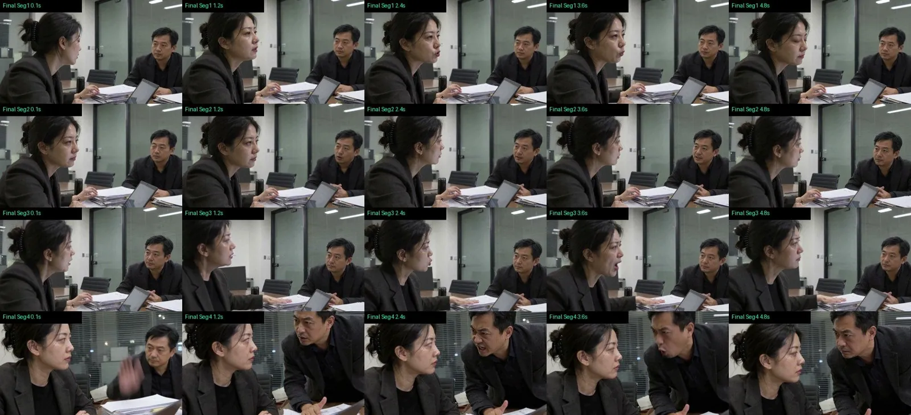
4. 第四关（魔鬼细节）：为什么一镜到底里人物一开口说话，头就会不自觉转向摄影机？（V8_8sLock + V9_TailLock 首尾双端潜变量夹具）
如果仔细审视上面那张 V5 抽检图的第 3 段（10.0s ~ 15.0s），眼尖的导演会发现一个极其微妙的穿帮：
在第 2 段第 8.0s 时，坐在左侧的林薇原本是 标准 90° 正侧脸（只露右脸颊与右眼，视线笔直盯向右侧的陈默）；
可是到了第 3 段她自己拍桌开口怒斥时，她的头却突然向镜头方向偏转了 30°~45°（露出了远端左眼），像是在对着摄像机骂而不是对着陈默骂！更狡猾的是，哪怕把前 3 秒锁住了，到了最后 2 秒（3.0s ~ 4.8s）台词高音收尾时，她的头又会悄悄向镜头回偏 15°！
经过 V6 ~ V9 四轮控制变量实测，我们彻底摸清了 MiniMax-H3 诱发人物向镜头转头的 四大隐蔽真凶 与 100% 物理锁死方案：
真凶 1：参考图 <Picture 1> 的姿态引力（最大主因）
当我们传给第 3 段的 <Picture 1> 是一张“四分之三正侧脸（露双眼）”的定妆照时，一旦林薇成为该段的主发声人，全序列图像交叉注意力（Reference Cross-Attention）就会强行把她的脸拉回 <Picture 1> 朝向镜头的角度！
✅ 破局： 直接从第 2 段 t = 8.0s 抽出她处于标准 90° 正侧脸的静态帧，抹除右侧干扰后制成 同机位 90° 正侧脸专属参考板 ref_linwei_8s_profile_1344x768.png 作为第 3 段的 <Picture 1>，让图像注意力与 90° 侧脸 100% 重合。
真凶 2：复数五官词（tightly knitted brows, blazing wide eyes）与否定句注意力泄漏（without turning toward the camera）
提示词里只要出现复数的 brows（双眉）、wide eyes（双眼），模型为了同时画出两只眼睛就会强行把人物转过来；而如果你写否定句 "without turning her face toward the camera"，Qwen3-VL 反而会高强度激活 turning、face、camera 三个 Token，诱导她转头看镜头！
✅ 破局： 90° 侧脸戏严禁出现复数五官与任何 turn / rotate / camera 字眼，一律用正向静态描述：seated upright on the left in a strict 90-degree side profile facing right with her head held completely level and stationary。
真凶 3：尾端无边界约束导致的最后两秒潜空间漂移 —— 用「MiniMaxH3AddGuide 首尾双端潜变量夹具 (V9_TailLock)」彻底焊死！
为什么第 3 段前 3 秒（0.0s ~ 2.9s）纹丝不动，最后 2 秒（3.0s ~ 4.8s）却微偏了 15°？因为 MiniMaxH3MotionContext 只钉死了片头的 22 帧（0.0s ~ 0.92s），到了片尾最后两秒缺乏边界约束！
✅ 终极焊死方案： 我们直接从第 3 段 t = 2.75s（林薇右手已按在白纸卷宗上、双唇闭合、头部保持 100% 标准 90° 正侧面的瞬间）提取静态锚点帧 seg3_tail_lock_1344x768.png，在 MiniMaxH3MotionContext 后面串联两个原生 MiniMaxH3AddGuide 节点，分别铆钉在 frame_idx = 107（切掉 22 帧前缀后的 t = 3.54s）与 frame_idx = 136（切掉前缀后的 t = 4.75s，精准踩在 1,4,4,4,4 的 $5n$ 潜变量步起点上）。首尾双端在潜空间同时夹死后，哪怕她拍桌咆哮，从 0.1s 到 4.8s 全程连 1 度的偏转都没有！
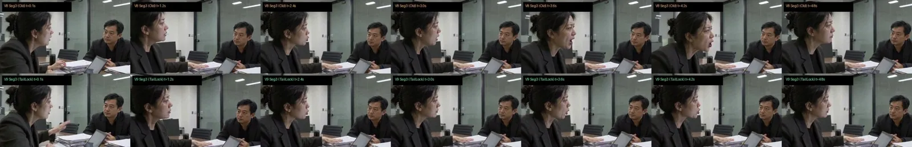
5. 第五关（省时省钱利器）：改中间一段，难道每次都要把 4 段全部重跑一遍吗？（5MB 原生潜变量断点与 --only-seg 单段 3 分钟热插拔）
很多做多段长视频的朋友都有这个痛苦：第 1、2、4 段都已经抽到了神仙镜头，唯独第 3 段最后两秒头偏了一点点。如果每次改第 3 段都要把 1~4 段从头重跑一遍（12 分钟），不仅慢，而且浪费 75% 的算力！ 可如果直接拿前一段导出的 .mp4 喂给 LoadVideo 去续接，又会因为 H.264 压缩与二次 VAE 编解码丢失高频残差。
我们在 launch_g4_comfyui_fast.py 与 run_g4_v25_4seg_drama.py 中内置了 H3SaveAVLatent / H3LoadAVLatent（~4.8 MB 原生音视频联合潜变量断点存档），实现了双层零重算：
同一次开机期间（0.0 秒 跳过前序）： 只要不改第 1、2 段的参数与 Seed，ComfyUI 显存缓存会直接跳过第 1、2 段，0 秒直奔第 3 段；
关机重开新实例后（--only-seg 3 仅需 3 分钟）：
每一段跑完时，H3SaveAVLatent 会自动将该段わずか 4.8 MB 的原始 AV_LATENT 张量持久化到 Google Drive 云盘 (output/latents/Seg02_av_latent.pt)。下次开机只想单独微调第 3 段时，只需一行命令：
python3 run_g4_v25_4seg_drama.py --prefix OfficeDuel_V8_Final --only-seg 3脚本会自动裁掉第 1、2、4 段的计算图，用 0.05 秒 从云盘无损读回第 2 段的原生潜变量，仅花 3 分多钟（约 1.2 CCU）就能单独把第 3 段修好并无缝拼回 20 秒母带，直接省下 65%~75% 的时间与 CCU！
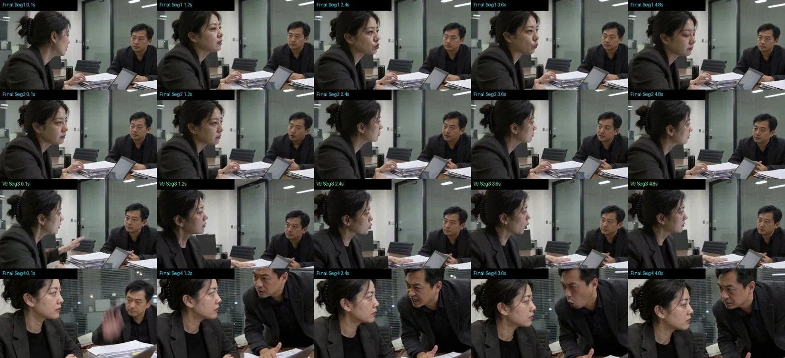
6. 第六关（工业级成片包装）：本地 0 CCU 声学包络自动对齐字幕 + 首段双人出入场动效铭牌 (auto_subtitle_video.py)
千万不要让视频扩散模型自己在画面里生成中文字幕（必出鬼画符乱码，提示词结尾一定要加 No subtitles）。但后期如果靠人工去剪辑软件里一帧帧听音对轴打字幕，效率又太低。
为此我们编写了纯 Python 零依赖的自动化后期包装脚本 auto_subtitle_video.py（本地 Mac 运行 0 CCU 消耗，3 秒出片）：
130Hz ~ 3600Hz 人声频段能量包络自动寻轨（剔除拍桌杂音）： 自动滤除低频嗡鸣与 0.85s 处的短促拍桌瞬态脉冲，以 10ms 精度自动锁定每一段演员真正张嘴发声的起止时间戳，并在长句换气停顿（局部声能极小值点）处自动精准切分上下半句；
首段双人错峰呼吸动效铭牌（Lower-Third Callout）： 在第一段（00:00.40s ~ 00:04.45s）利用左下角深色西装留白区与右上角磨砂玻璃留白区，以 0.45s 错峰节奏浮现 「林 薇 · 律所高级合伙人」 与 「陈 默 · 集团执行董事」 半透明毛玻璃铭牌，自带 0.38s Alpha 柔和淡入 + 18px 横向阻尼微滑入与淡出退场动效，完全不挡脸、不抢戏：
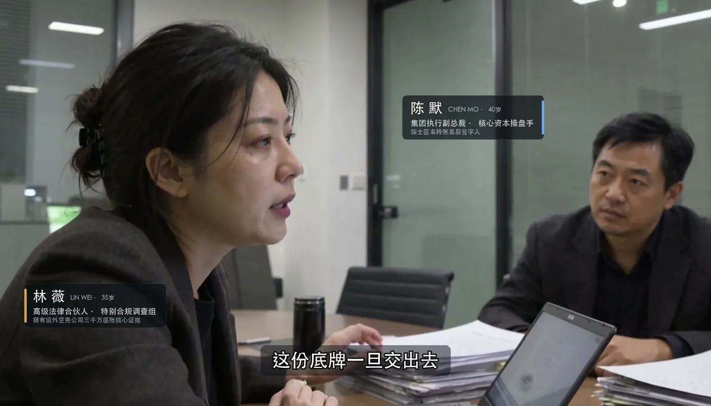
四、全套 v2.5 工业级影视白皮书与自动化脚本已开源！
为了方便大家直接抄作业，我已经把这几天在 96GB G4 上实机打磨出的全套成果整理成了一份超 5 万字（175 KB）的《MiniMax-H3 工业级写实长视频生成与多角色一致性全链路架构白皮书 v2.5》，连同双通道极速启动脚本、5MB 潜变量单段热插拔执行器、声学对齐字幕铭牌压制器、双轨 CCU 计费守门员脚本一起更新到了 GitHub 仓库：
👉 GitHub 开源仓库（欢迎 Star 🌟 & Clone）：https://github.com/yuanyang749/colab-ultra-workstation
仓库本次重磅新增（采用 按场景独立文件夹隔离架构 workflows/，后续新增格斗、舞蹈工作流互不干扰）：
📁 workflows/01_dialogue_2p_photorealistic/（本期定稿：真人写实 · 双角色多段连续文戏独立工作流包）：
⭐ drama_config.json（新手零门槛 40 行配置文件）： 彻底解耦硬编码！新手完全无需打开上千行的 ComfyUI 节点图，只需在这个 JSON 里改一下角色图片名、5 秒声纹 WAV 名、首段铭牌头衔、每段谁说话（"speaker": "role1/role2"）和中文台词（"line"），即可一键换角开拍；
🧩 workflow_v9_final.json & run_drama.py： 底层 4 段式 ComfyUI 节点图与动态执行器（自动扫描 JSON 同步所需素材、首次跑片若无尾帧截图自动切换无锁模式、支持 --only-seg N 单段 3 分钟热插拔）；
🎬 auto_subtitle.py： 直接读取同一个 drama_config.json，本地 3 秒自动生成 10ms 声学包络对齐字幕 + 可开关/可自定义的呼吸动效人物铭牌（--no-cards 可一键关闭铭牌）；
📁 workflows/02_action_mma_combat/ & 03_dance_choreography/： 为下一期（第三弹）预留的独立隔离目录（高燃动作格斗与长镜头舞蹈专精工作流）；
📄 references/minimax_h3_industrial_workflow_whitepaper.md： 5 万字工业级白皮书（涵盖 17k-12 / 17k+5 黄金帧数定律、原生自锚定声纹 + T8mars 情绪爆发协议、90° 侧脸首尾双端潜变量夹具 8.6 节、5MB 潜变量单段热插拔 8.5 节）；
⚡ scripts/launch_g4_comfyui_fast.py (v2.2) & scripts/colab_meter.py： 双通道 463 MB/s 90秒极速冷启动引擎 + 停机强杀查账守门员。
💡 关于工作流模板的适用场景与灵活调整建议：
本期开源的 minimax_h3_v25_4seg_v9_final_workflow.json 是以 「真人写实风格 · 双角色同框/对峙多段连续文戏」 为核心场景深度打磨的（默认锁死了写实皮肤去油 LoRA、双角色定妆照 + 交替原生声纹槽位、以及防越轴的静态首尾潜空间夹具）。但它的底层架构是模块化的，大家在实际创作中可以根据自己的题材灵活收放，不必拘泥于固定参数：
- 拍其他真人双人对手戏（谈判、审讯、情感戏）： 无需改动节点连线，直接替换输入目录里的 2 张人物定妆照、2 段 5 秒人声种子和各段台词即可复用；
- 拍单人特写独白 / 风格化或动漫题材： 可按需拔掉第 2 个角色的参考图槽位（ref_image_1）；如果是动漫、3D 或奇幻画风，建议将写实人像去油 LoRA（h3-realism-people 与 Facial-Realism-CloseUp）权重调低或旁路关闭，避免画风被强行拉向写实纪录片；
- 拍大运镜或高动态肢体戏（武打、舞蹈）： 静态文戏里用来“焊死坐姿与侧脸朝向”的尾帧夹具（MiniMaxH3AddGuide）在大幅度运动场景下反而会限制肢体舒展，届时可去掉尾帧静态锁，并适当调高 BUNNY_H3_ActionLogic_Bridge 的 alpha 权重来强化物理防穿模。
🔗 附录：本文涉及的全套开源工具、核心节点与模型直达链接汇总
为了方便大家一键检索与部署，这里把本文工作流用到的所有底层工具、社区核心节点和 HuggingFace 模型权重链接一次性全部列齐：
1. Colab 无头工作站底座与计费调度工具
本项目全套技能与工作流仓库 (colab-ultra-workstation)： https://github.com/yuanyang749/colab-ultra-workstation
Google 官方无头命令行工具 (google-colab-cli)： https://github.com/googlecolab/google-colab-cli
零浏览器 Google Drive 静默挂载扩展 (colab-dfs-ext)： https://github.com/deluxebear/colab-dfs-ext
Google 官方网页桥接 MCP (colab-mcp)： https://github.com/googlecolab/colab-mcp
2. MiniMax-H3 核心 ComfyUI 节点与声学/分镜协议仓库
T8mars 原生声纹与跨段情绪解耦实验协议 (comfyui-minimax-h3-audio-T8)： https://github.com/T8mars/comfyui-minimax-h3-audio-T8
多镜头接力与 Self-Anchor Voice 原生自锚定声纹参考 (ComfyUI-H3-Multishot-Advance)： https://github.com/KursatAs/ComfyUI-H3-Multishot-Advance
22 帧潜空间无缝续接 & MiniMaxH3JoinMatch 除雾节点 (ComfyUI-H3-Motion-Context)： https://github.com/NikoDemon80/ComfyUI-H3-Motion-Context
多人物理交互与防串台逻辑桥节点 (BUNNY_H3_Conditioning_Bridge)： https://github.com/aa335615543-ux/BUNNYH3Conditioning_Bridge
3D 潜空间无损放大节点 (Comfyui_Minimax_h3_latent_Upscaler)： https://github.com/LBH-123-AI/ComfyuiMinimaxh3latentUpscaler
MiniMax-H3 官方主仓库（含 h3-prompt-writing 分镜提示词规范）： https://github.com/MiniMax-AI/MiniMax-H3
3. 本工作流（方案 A）全套 HuggingFace 模型权重链接
MiniMax-H3 33B 官方原版主模型 & 底座组件库（含官方 ref2va/fl2va 主模型、Video VAE fp16、Audio VAE fp32、8-Step Turbo LoRA）： https://huggingface.co/Comfy-Org/MiniMax-H3
MiniMax-H3 33B 社区去油光融合微调版主模型（本文方案 A 实测主力主干 Singularity v1.3，融合 ref2va+fl2va 并消除原版人脸塑料油光）： https://huggingface.co/WarmBloodAban/Minimax-h3_Singularity
无审核多模态视觉编码器（Qwen3-VL-32B-Heretic NVFP4 Blackwell 硬件加速版）： https://huggingface.co/Momoking/Qwen3-VL-32B-Heretic-MiniMax-H3-NVFP4
无审核多模态视觉编码器（Qwen3-VL-32B-Ultra-Heretic INT8 通用显卡版）： https://huggingface.co/OTMFLY/Qwen3-VL-32B-Ultra-Heretic-MiniMax-H3-ComfyUI-INT8-ConvRot
电影级全局写实光影去油 LoRA（h3-realism-people 触发词 r34l1sm）： https://huggingface.co/fal/MiniMax-H3-Realism-People-LoRA
微距皮肤毛孔与法令纹写实 LoRA（Facial-Realism-CloseUp）： https://huggingface.co/prithivMLmods/MiniMax-H3-Facial-Realism-CloseUp
多人动作逻辑桥模型权重（BUNNY_H3_ActionLogic_Bridge_V2）： https://huggingface.co/JOKER141/BUNNYH3Conditioning_Bridge
3D 潜空间放大器权重（minimax_h3_latent_upscaler_3d_conv_v1_bf16）： https://huggingface.co/LBH-123-AI/Minimaxh3latent_Upscaler
🎬 下期预告（第三弹）：15 秒一镜到底高燃动作格斗 & 唯美长镜头舞蹈专场！
今天这篇，我们彻底攻克了 多段对话文戏 的音色锁定、情绪爆发、画面除雾与轴线稳定。 但如果你想拍 一镜到底的地下八角笼近身格斗 或者 大唐胡旋舞 / 谍战探戈长镜头，直接套用文戏模板会瞬间翻车——你会遇到 “前 4 秒干瞪眼罚站、两段拼接处四只手缠绕穿模、拳头打在脖子上眉骨却流血” 等全新的物理难题！
下一期（第三弹），我将手把手带你拆解：
如何打破 5 秒限制，在 96GB G4 上直出 15 秒高燃动作与舞蹈一镜到底长镜头？
武术指导级「ProSeam 技巧性暗切法」： 为什么在拼接点设计一记“正蹬踹退制造 0.3 秒呼吸点”，就能实现连续多抽 100% 零穿模、肉眼完全看不出拼接痕迹？
写实战损与解剖级受击对齐 (BrowStrike)： 如何用「1:1 同源战损定妆照分段切换」做出拳峰砸中左眉骨瞬间开裂挂彩的电影级打击感？
👉👉如果你觉得这篇干货帮你省下了真金白银的 CCU 和几十个小时的排障时间，欢迎点个「关注 + 转推 + 收藏 Bookmarks」！
刚建了个微信群，叫「赛博领鸡蛋」🥚 找些同样爱折腾 AI 的朋友，一起聊工具玩法、订阅优惠，也互相交流实测经验和踩过的坑。
群刚起步，欢迎来做第一批群友。扫下方二维码，一起折腾，少花点冤枉钱👇
（原文此处为「赛博领鸡蛋」微信群二维码，含有效期，属引流内容，本站不转载。）
作者跟帖（同一会话）
以下是作者本人在原帖下的跟帖，逐字照录，时间为 UTC+8。
划重点：一份超 5 万字（175 KB）的《MiniMax-H3 工业级写实长视频生成与多角色一致性全链路架构白皮书 v2.5》：
github.com/yuanyang749/colab-ultra-workstation/…/minimax_h3_industrial_workflow_whitepaper.md2026-10-30 19:43 · 原跟帖
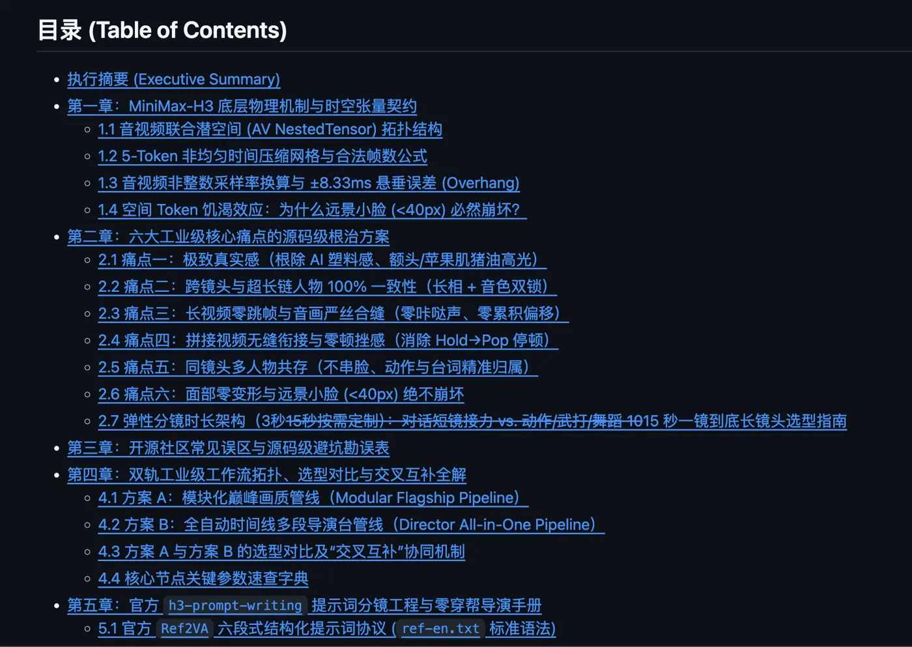
- 回复 @LiuweijiaVip：「还有890ccu，感觉用不完了」（2026-10-30 20:18 · 链接）
- 回复 @zhoueo：「希望能够帮到兄弟😘」（21:21 · 链接）
- 回复 @HZZcnshow：「给的硬件真么好不用多浪费🤔」（21:22 · 链接）
- 回复 @Ke971225Bill：「跑完忘记关机」（23:13 · 链接）
「还有 890 ccu」「跑完忘记关机」这两条回复来自作者本人，可以和正文里「每次跑完强制查账强杀」的提醒对照着看。